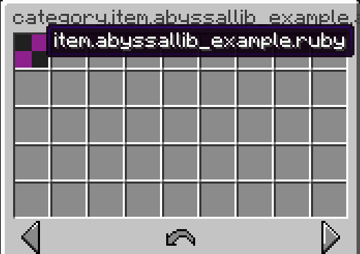
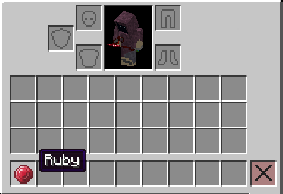

This page will cover basic concepts related to Items, registration, loading texture and translation, and creating tooltips.
Preparing the Items class
You can create a register method to simplify item registration that takes in "id/name" and a consumer (for easily adding DataComponents on the Item).
public final class Items {
public static final DeferredRegistry<Item> ITEMS = DeferredRegistry.create(Registries.ITEMS, AbyssalLibExample.PLUGIN_ID);
private static Item register(String name, Consumer<Item> modifier) {
// ID is always in the form "plugin_id:name"
return ITEMS.register(name, id -> {
Item item = new Item(id);
modifier.accept(item);
return item;
});
}
}
Registering an item
You can register an item using the method now.
public static final Item RUBY = register("ruby", item -> {});
However if you try to load the plugin and find the item, you will be unable to. This is because the DeferredRegistry has not been applied yet.
To do this, head over to your onEnable and call the apply() method on the DeferredRegistry
public final class AbyssalLibExample extends JavaPlugin {
public static final String PLUGIN_ID = "abyssallib_example";
@Override
public void onEnable() {
Items.ITEMS.apply();
}
}
Now when you load into the server, and run /abyssallib contents items (or use /abyssallib give <id>, and open your plugins section you will find the item in it. However you will realize the item has a missing texture and an untranslated name

Creating a Texture and Naming the item
To load textures, lang files and such, you will need to use the ResourcePack API.
To load a texture, it must be present inside resources/resourcepack/<namespace>/textures/<path>.png
For example purposes, you can use this ruby.png texture.
public final class Pack {
public Pack(AbyssalLibExample plugin) {
ResourcePack pack = new ResourcePack(plugin, AbyssalLibExample.PLUGIN_ID); // Second argument is the "name" of the Resource/ZIP
Namespace ns = pack.namespace(AbyssalLibExample.PLUGIN_ID);
// Loads texture from resources/resourcepack/<namespace>/textures<path>.png
Texture rubyTex = ns.texture("item/ruby");
// Creates a model without loading it from resources/
Model model = ns.model("item/ruby", false);
// Sets the "parent" field of the model
model.parent("minecraft:item/generated");
// Sets the "textures" fields for model (e.g "0", "layer0" etc)
model.texture("layer0", rubyTex);
// Creates an items/ definition with provided selector without loading from resources/
ns.itemDefinition("ruby", new Selector.Model(model), true, false, 1.0);
// Creates a Lang without loading it from resources/
Lang enUS = ns.lang("en_us", false);
// Lang key for items is "item.<namespace>.<id>"
enUS.put("item.abyssallib_example.ruby", "Ruby");
enUS.put("category.item.abyssallib_example.all", "All Items");
// Argument decides whether it should override existing file
pack.register(false);
}
}
Now when you launch the server and check, the item will have a Name and a Texture

Adding a crafting recipe
If you want to add a crafting recipe, you can either make a recipe normally, or use the provided RecipeLoader for loading from YML files. For this example, we will make the file in resources/data/recipes/ruby.yml
For custom tooltips, you can either use Item#setData to set the Lore component, or override createTooltip in Item and call it in constructor (aswell as updateTooltip).
@Override
public void createTooltip(Tooltip tooltip) {
tooltip.lines.clear();
tooltip.addLine(TextUtil.parse("<!i><white>Inflicts <yellow>fire</yellow> on target for <green>3</green> seconds"));
}
Afterwards, to apply it, we just call the method and then updateTooltip() (in our cas, in the constructor)
public final class FireSword extends Item {
public FireSword(Key id) {
super(id);
// ... other code
createTooltip(tooltip);
updateTooltip();
}
// ... other methods
}